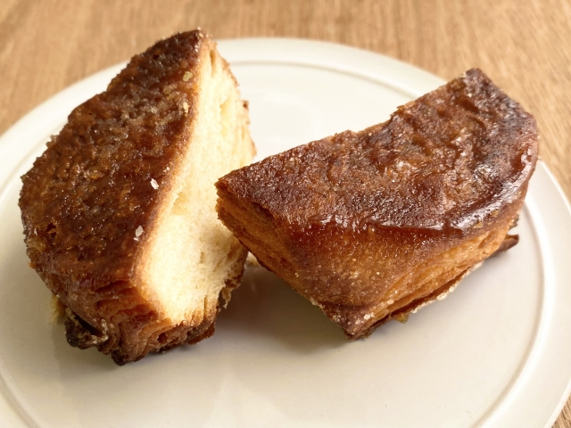

クイニーアマンとは？
クイニーアマン（フランス語: Kouign Amann）は、フランス・ブルターニュ地方の伝統的な洋菓子です。ブルターニュ地方の言葉であるブルトン語で「バター（Amann）の菓子（Kouign）」を意味します。
カリカリとしっとりの二つの食感
- 外側: 表面にたっぷりとまぶされた砂糖が、焼成中に溶けてカラメル状になります。これにより、カリカリ、パリパリとした香ばしい食感が生まれます。
- 内側: パン生地にバターを何層にも折り込んで作られるため、中はバターがじゅわっと染み込み、しっとりともっちりした食感を楽しむことができます。
発祥はパン屋の「失敗」
クイニーアマンは、1860年頃にフランス北西部のブルターニュ地方にあるドゥアルヌネという町で誕生しました。言い伝えによると、あるパン職人が、小麦粉が不足していた際に、分量を間違えてバターを大量に使ってしまった生地を、もったいないからとそのまま焼いてみたところ、偶然にもこの美味しいお菓子が生まれたと言われています。まさに「失敗は成功のもと」から生まれた逸品です。
材料と作り方
主な材料は、小麦粉、砂糖、たっぷりのバターと、少量の塩。伝統的には、風味豊かな有塩バターが使われます。作り方は、パン生地にバターのシートを置き、何度も折りたたんで層を作るという、クロワッサンやデニッシュに似た工程を経ます。最後に、生地の周りに砂糖をまぶし、型に入れてじっくりと焼き上げることで、外はカリッと、中はしっとりとしたクイニーアマンが完成します。
日本では、パン屋やコンビニエンスストアでも見かけることができるほど、人気の高い焼き菓子の一つとして親しまれています。温め直すとバターの香りがより一層引き立ち、美味しくいただけます。
クイニーアマンとクロワッサンの比較
| クイニーアマン | クロワッサン | |
|---|---|---|
| 生地への加糖 | 生地を折り込む際に、バターと共に多量の砂糖も折り込む。 | バターの折り込みが主で、砂糖は少量。 |
| 成形と焼成 | 円形の型に入れ、表面にも砂糖を振って焼く。 | 型は使わず、三日月形に成形して焼く。 |
| 食感の特徴 | 表面の砂糖が溶け、分厚く香ばしいカラメルの層を形成。中はバターと砂糖が溶け合い、もっちり・じゅわっとした食感。 | 薄い層がハラハラと崩れるような、軽やかでサクサクとした食感。 |
| バターの種類 | 伝統的には風味と塩味の強い有塩バターを使用。 | 上品な香りの無塩バターが一般的。 |